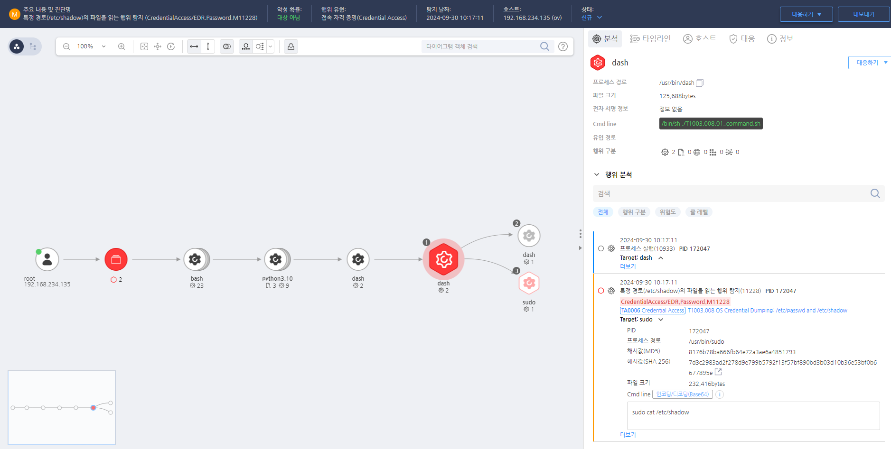

T1003.008.01 /etc/sahdow 파일 복사
D3FEND
MITRE ATT&CK 액션을 기준으로 대응 방안을 작성
Detection
Action = "ProcessCreate" AND
CurrntProcess != "etc_shadow" AND
Cmdline = "cat /etc/shadow"
Detection(EDR)

Response
침해된 계정의 자격 증명(패스워드)을 즉시 변경하고, 공격자가 탈취한 자격 증명을 사용하여 네트워크 내 다른 시스템에 접근하지 못하도록 조치합니다.
Mitigations
자격 증명 보호
- LSA 보호를 활성화하여 SAM 파일을 보호하고 Credential Guard를 사용하여 시스템에서 크리덴셜을 안전하게 저장합니다.
- SAM 파일이 저장된 경로(
C:\Windows\System32\config\)의 접근을 제한하여 비관리자 계정이 파일에 접근할 수 없도록 설정합니다.
보안 솔루션 강화
- EDR/XDR 솔루션을 사용하여 SAM 덤핑 관련 도구인
Mimikatz, procdump, volatility 등의 실행을 탐지합니다.
- Microsoft Defender의 Attack Surface Reduction (ASR) 정책을 사용하여 악성 프로세스가 SAM 파일에 접근하는 것을 차단합니다.
이벤트 로깅 및 감사 정책 강화
- Windows Event Log에서 SAM 파일 접근, 로그인 시도 및 비정상적인 권한 상승을 모니터링합니다.
- 중요한 이벤트에 대해 실시간 경고를 설정하고, SIEM에서 SAM 관련 접근 시도(
4663, 4672, 4720, 4732)를 로깅합니다.
권한 제어
- 로컬 관리자 계정 및 시스템 권한을 최소화하고 최소 권한 원칙을 적용하여 AdminSDHolder 계정에 대한 권한을 제한합니다.
- 로컬 관리자가 시스템 파일 및 레지스트리 키에 접근할 수 없도록
SeBackupPrivilege, SeRestorePrivilege 권한을 제한합니다.
레지스트리 및 시스템 설정 보호
- Windows Defender에서 Tamper Protection을 활성화하여 SAM 파일에 대한 변경을 방지합니다.
SAM, SYSTEM, SECURITY 레지스트리 파일의 접근을 제한하고 백업 권한을 최소화합니다.
네트워크 보안 및 모니터링
- 원격 데스크탑 프로토콜(RDP)과 같은 원격 접속을 제한하고, NLA(Network Level Authentication) 및 2단계 인증(MFA)을 활성화하여 인증된 사용자만 원격으로 시스템에 접근할 수 있도록 합니다.
- 네트워크에서 비정상적인 로그인 시도나 시스템 액세스를 감지하는 네트워크 보안 솔루션을 적용합니다.
Affected Techniques
Action 실행시 함꼐 영향을 받는 다른 Techniqes
| D3FEND |
| D3-FAPA File Access Pattern Analysis |
| D3-FCA File Creation Analysis |